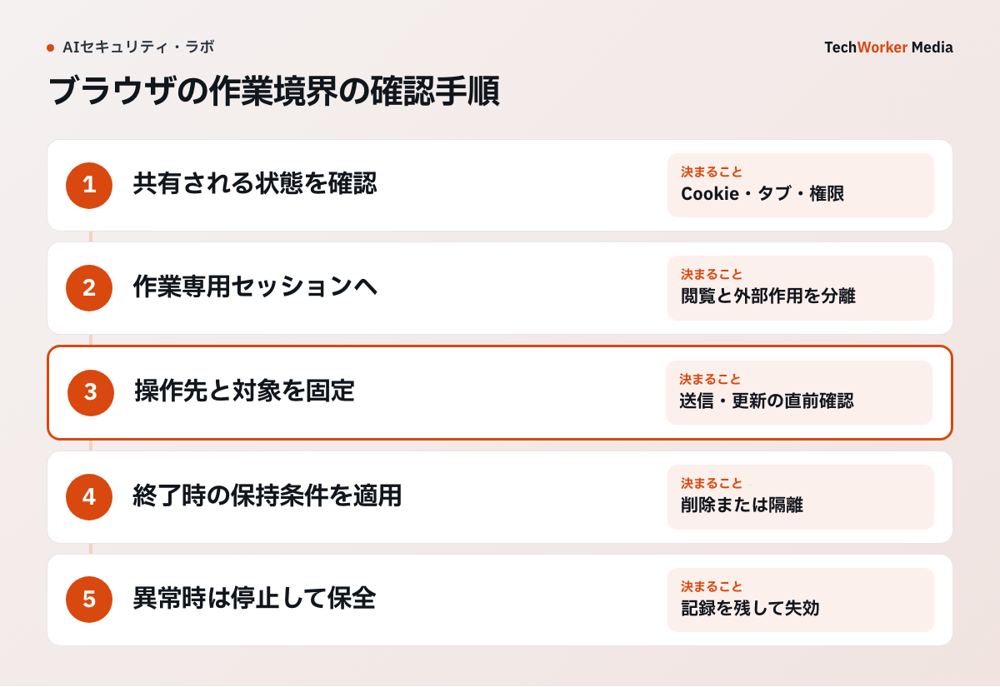

AIにブラウザ操作を任せると、ログイン済みのサービスで閲覧や書き込みができる場合があります。仕事の依頼と関係のないアカウントまで触らせないために、操作するサイトと作業環境を限定します。Chromeの公式資料が挙げる制限から確認します。
一次資料：Chromeが示す、操作できるサイトの制限（2026年6月9日、確認：2026年10月6日）
Restrict the set of web origins the agent can interact with to those relevant to the user's task.
出典：Chrome for Developers, Agent security considerations for WebMCP。引用では、エージェントが操作できるウェブサイトを、利用者の依頼に関係する範囲へ制限するよう求めています。

Chromeの公式資料はブラウザ内エージェントの権限継承を問題にする
ブラウザ上のエージェントは、表示中のページだけを扱うとは限りません。同じ専用環境のCookie、ログイン状態、保存先、クリップボードへ届く可能性があります。ウェブから届く指示を信頼すると、既存セッションの権限で意図しない操作が実行されます。
対策の出発点は、入力文を工夫することではなく、セッションそのものを分けることです。
3つのセッションを用途で分ける
公開情報の調査は、ログインしない使い捨てセッションで行います。社内SaaSの閲覧は、対象サービスだけへログインした専用環境にします。送信や設定変更は、別セッションで開き、実行前に人が対象と差分を確認します。
普段使いの環境には、メール、請求、管理画面のセッションが混在します。便利でも、その環境をエージェントには渡しません。エージェント専用環境では、パスワード管理機能の自動入力とブラウザ同期を無効にするか、対象認証情報だけに絞ります。
画面記録とダウンロードを機密データとして扱う
画面記録には、本文以外に通知、タブ名、アカウント名が写ります。取得範囲を対象画面へ限定し、保存期間と閲覧者を決めます。URLの問合せ文字列にトークンが入るサービスでは、アドレス欄も記録対象から外します。
ダウンロードは専用フォルダーへ置き、終了時に残存を確認します。別作業が同じフォルダーや専用環境を再利用すると、前の顧客資料を次の作業が読めます。
越境できないことを実際に試す
専用環境で、対象外ドメインのCookieが見えないこと、ダウンロード先が分かれていること、セッション終了後にログインが残らないことを確かめます。外部リンク、別画面、ファイルのアップロードが別画面を開く場合も同じです。
分離は設定値の確認だけでは足りません。実際の操作経路で越境が失敗するところまで試します。